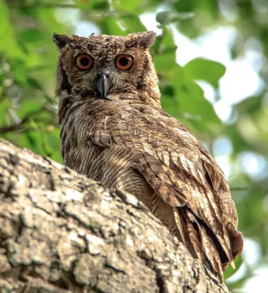

Um modelo guiado para trabalhos acadêmicos da Universidade Federal do Rio de Janeiro.
O projeto foi criado para disponibilizar e manter modelos de trabalhos acadêmicos da UFRJ, verificados pelo SiBI, que respeitem as normas estabelecidas no manual de trabalhos acaêmicos da UFRJ. O projeto foi criado sobre algumas premissa entre elas podemos destacar duas:
O modelo precisa ser simples
O principal ponto do projeto é a de tentar fazer um modelo que seja fácil de usar e de manter. Para isso o princípio do KISS (Keep It Simple Stupid) é muito bem vindo.
Seguem algumas sugestões podem ajudar a alcançar esse objetivo de simplicidade:
Semântica do modelo
Além de ser aderente ao padão de formatação sugerido pelo SiBI da UFTJ, o modelo tenta apresentar um conteúdo guiado, que também ajude com a semântica do trabalho acadêmico. É possível indicar boas práticas na semântica esperadas em um texto acadêmico, como: as principais seções e subseções esperadas bem como as indicações sobre qual seria o conteúdo esperado para cada uma delas.
Por que Jacurutu?

A escolha de um mascote é um hábito comum em projetos de código aberto, e o grupo que está participando da iniciativa achou que seria uma ideia interessante pensarmos em adotar um mascote para o projeto. A coruja, por sem um animal que sempre está associado a sabedoria foi a escolha natural. Ao pesquisarmos sobre as corujas existentes na fauna basileira, encontros a espécie Jacurutu (virginianus nacurutu), que também é conhecido como corujão-orelhudo, e coruja-orelhuda. A espécie é encontrada em quase todo território nacional. Além da sonoridade do nome, o seu hábito noturno pode ter sido levado em consideração durante a escolha da espécie ;)
Histórico do projeto
O projeto surgiu durante o desenvolvimento da dissertação de mestrado de Saulo Andrade Almeida, egresso do Programa de Pós-Graduação em Informática (PPGI), do Instituto de Computação da UFRJ. Ao escrever o seu texto, encontrou dificuldades em utilizar os modelos LaTeX existentes. Existiam pelo menos quatro ou cinco modelos, mas todos estavam desatualizados com relação os uútimos ajustes de formatação solicitadas pelo Manual de Trabalhos Acadẽmicos do SiBI.
Ao tentar adaptar alguns dos modelos existentes, percebeu que a mioria deles não tinha uma comunidade ativa, e que sua manutenção no formato LaTeX eram bem complexas, baseadas em macros e comandos customizados. Sendo assim, ele resolveu começar um modelo da forma mais simples possível, evitando ao máximo a criação ou uso de macros complexas.
Com o desenvolvimento do trabalho, foi percebendo que a maioria das necessidades poderiam ser supridas por pacotes LaTeX existentes e amplamente adotados pela comunidade LaTeX e a conclusão do seu trabalho foi feito dessa forma, sem precisar criar nada novo.
Sobre o ponto de vista das regras e formatação, o trabalho foi acompanhado e revisado diversas vezes pela bibliotecária do Núcleo de Computaçẽo e Eletrónica (NCE), Tatiana Souza Ribeiro, que ao final de algumas (muitas) idas e vindas, entendeu que o trabalho estava bem próximo das normas estabelecidas pelo Manual do SiBI.
A ideia de tornar esse esforço em algo que pudesse ser reutilizado por mais pessoas, melhorando e facilitando a produção acadêmica dentro do PPGI, fez com que fosse criado um repositório no GitHub para disponibilizar um modelo, e onde suas mudanças evoluções pudessem ser tratadas e controladas de forma ordenada, como um software.
Ao apresentar essa idea para a professora Mônica Ferreira da Silva, da disciplina de Metodologia da Pesquisa do PPGI, ela achou que a ideia tinha um grande valor e adicionou ao modelo vigente, a ideia do conteúdo semântico, tornando o modelo não mais um guia de referência para a formatação, mas um guia que poderia orientar os usuários sobre quais seriam seções importantes dentro de um trabalho acadêmico, bem como quais os conteúdos que essas seções poderiam comportar. Dquele momento em diante o modelo passou a ser chamdao de "Um Modelo Guiado" para trabalhos acadêminos da Universidade Federal do Rio de Janeiro.
O técnico administrativo Élton Carneiro Marinho ingressou no grupo, com ideias e sugestões sobre como formatar e direcionar o que passou a ser chamado de Projeto Jacurutu. Dentre as ideias sugeridas, estava o registro da solução, a criação de vídeo tutorias curtos, que facilitassem a adoção e uso do modelo e a disponibilização do modelo em formatos de editores de textos como MS Word, Libre Office e Google Docs.
Quem Somos
Atualmente, os principais integrantes do projeto Jacurutu são:
Saulo Andrade Almeida
Deu início ao projeto Jacurutu, é mestre em Informática pela Universidade Federal do Rio de Janeiro (2025) e Bacharel em Informática pela Universidade Católica do Salvador (2005).
Atualmente é Analista de Sistemas Sênior na Petróleo Brasileiro S.A. (Petrobras). Tem experiência na área de Ciência da Computação, com ênfase em Sistemas de Informação, atuando profissionalmente principalmente nos seguintes temas: engenharia de software, Java, C++, SQL, engenharia de requisitos, requisito e processamento paralelo.
Academicamente tem interesse nas áreas de processamento paralelo/distribuído.
Currículo Lattes: http://lattes.cnpq.br/9445629152806548
Tatiana de Souza Ribeiro
Mestra em Avaliação pela Faculdade Cesgranrio (2020). Especialização em Tecnologias da Informação Aplicadas à Educação pela Universidade Federal do Rio de Janeiro (2016). Graduação em Biblioteconomia e Documentação pela Universidade Federal Fluminense (2010).
Atualmente é bibliotecária da Universidade Federal do Rio de Janeiro. Atuando principalmente nos seguintes temas: Acessibilidade em bibliotecas; Tecnologia assistiva para pessoas com deficiência visual.
Currículo Lattes: http://lattes.cnpq.br/8006871142634350
Mônica Ferreira da Silva
Possui Doutorado em Administração pelo COPPEAD/UFRJ (2006) com foco em estratégias e sistemas, Mestrado em Engenharia de Sistemas e Computação pela COPPE/UFRJ (1998), Especialização em Gerência de Projetos pelo NCE/UFRJ (2001) e Graduação em Informática pela Universidade Federal do Rio de Janeiro (UFRJ) concluído com grau cum laude de dignidade acadêmica (1988).
Atualmente é pesquisadora da Universidade Federal do Rio de Janeiro (UFRJ); fundadora e líder do grupo de pesquisa HumânITas (UFRJ) desde 2006; membro do grupo de pesquisas ResiliSUS do Centro de Estudos Estratégicos da FIOCRUZ/RJ e do Centro de Estudos em Gestão de Serviços de Saúde CES, do COPPEAD/UFRJ.
Atua como professora no programa de Pós-Graduação em Informática (PPGI/UFRJ). Participa de orientações de Mestrado e Doutorado na ELACH/UMinho, Portugal.
É bolsista de Pós-Doutorado Sênior do CNPq, coordena projeto Universal do CNPq e bolsa de Iniciação Científica da FAPERJ. Integrante da Rede SOFIA com o projeto GESTPLANTE, vinculado ao Programa Prioritário Saúde Digital (RNP/CATI/MCTI).
Foi Diretora da Área de Atividades de Extensão do NCE/UFRJ (2016/2019). Atuou com a Université de Tours, França (2010-1012) e com a University of San Diego, EUA (2002-2010) em projetos de ensino.
Tem experiência nas áreas de Ciência da Computação e Administração, com ênfase em Gestão da Tecnologia da Informação. Atua principalmente nos seguintes temas: estratégia e sistemas de informação, metodologia de pesquisa científica e adoção de tecnologia. Aplica suas pesquisas nas áreas de saúde e educação, tendo diversos artigos publicados em periódicos, livros, capítulos de livro e artigos em anais de congressos. É Editora-chefe do periódico Education Technology for Advancing Learning (et al.), membro do corpo editorial dos periódicos H2D - Revista de Humanidades Digitais (UMinho) e Meta: Avaliação (Faculdade Cesgranrio).
Currículo Lattes: http://lattes.cnpq.br/6380923400551734
ORCID: https://orcid.org/0000-0003-0951-6612
Website: https://monicasilva.net
Youtube: https://www.youtube.com/@profMonicaSilva
Instagram: @profmonicasilva
Élton Carneiro Marinho
Doutor em Gestão de Sistemas Complexos, com foco em Sistemas de Informação, pelo Programa de Pós-Graduação em Informática (PPGI) da Universidade Federal do Rio de Janeiro (UFRJ). Sua tese de Doutorado foi indicada ao Prêmio CAPES de Tese 2025 pelo PPGI.Possui formação sólida, tendo também obtido o mestrado na mesma área pelo PPGI.
Vinculado à Sociedade Brasileira de Computação (SBC) desde 2014, tem atuado como professor colaborador em cursos de graduação da UFRJ, além de ter sido representante discente no PPGI e auxiliar na elaboração de projetos na Diretoria de Planejamento e Gestão do CCMN/UFRJ.
Seu trabalho é notório na área de sistemas de informação, especialmente em projetos de inovação, como o intitulado "OpenSoils-Inovando na Agricultura Digital," que recebeu o Selo de Inovação da SBC e menção honrosa do Instituto Tércio Pacitti de Aplicações e Pesquisas Computacionais (iNCE).
Tem experiência significativa em projetos de ensino a distância, colaborando com o Ministério da Educação em iniciativas para melhorar a educação.Suas linhas de pesquisa incluem Adoção de Tecnologia, Blockchain, e Sustentabilidade e Inovação, refletindo seu trabalho sobre como implementar tecnologias de forma eficaz em contextos complexos.
Também se destaca em atividades de publicação acadêmica, participando de eventos, comissões julgadoras e orientando alunos em pesquisas.
Currículo Lattes: http://lattes.cnpq.br/5300044777886797
O projeto pretende manter o modelo homologado pelo SiBI, mas em diversos formatos. Atualmente a única versão pronta é a versão LaTeX, e cada um dos modelos poderá ser acessado em seus repositórios:
Modelo do Projeto Jacururu em formato LaTeX. Informações mais detalhadas podem ser obtidas no repositório jacurutu-latex do GitHub do Projeto Jacurutu.
O repositório possui uma Wiki com diversas informações técnicas do modelo, instruções sobre como utilizar, uma área de relato dos problemas conhecidos, materiais de referência específicos do modelo LaTeX, além do rastreador de erros, onde é possível sugerir melhorias, reportar um problema além de poder meter a mão na massa e ajudar na evolução do projeto.
Se julgar que esse modelo foi importante durante produção do seu trabalho e quiser ajudar em sua divulgação, uma citação para esse modelo pode ser feita na seção de metodologia do seu trabalho. Para isso, pode ser utilizada algum desses formatos de citação:
Citação Bibtex para modelo LaTeX
Uma citação em formato bibtex é a maneira mais simples para citar esse modelo. Basta adicionar a entrada bibitex que segue, no arquivo: 3-pos-textuais/referencias_bibliograficas.bib, ajustando o valor campo urldate para a data de acesso do arquivo no formato ano/mes/dia. Ex.: urldate = {2025/08/31}
@software{Projeto_Jacurutu,
author={Almeida, Saulo Andrade and Ribeiro, Tatiana de Sousa and da Silva, Mônica Ferreira and Marinho, Élton Carneiro},
title={Projeto Jacurutu: um modelo guiado para elaboração de trabalhos acadêmicos da UFRJ},
doi={10.5281/zenodo.16969842},
url={https://doi.org/10.5281/zenodo.16969842},
year={2015},
urldate = {YYYY-MM-DD}
}Em seguida basta citar o projeto, utilizando o comando \cite do LaTeX:
Esse trabalho utilizou o modelo de trabalho acadêmico mantido no Projeto Jacurutu \cite{Projeto_Jacurutu}\footnote{A última versão do modelo para trabalhos acadêmicos do Projeto Jacuruto pode ser acessada em: \url{https://doi.org/10.5281/zenodo.16969842}}.}Citação texto plano
Caso queira usar a referência em formato plano, basta copiar o quadro abaixo:
ALMEIDA, Saulo Andrade; RIBEIRO, Tatiana de Sousa; SILVA, Mônica Ferreira da; MARINHO, Élton Carneiro.
Projeto Jacurutu: um modelo guiado para elaboração de trabalhos acadêmicos da UFRJ. Rio de Janeiro, 2025.
DOI:10.5281/zenodo.16969842. Disponível em: https://doi.org/10.5281/zenodo.16969842. Acesso em: DD mês. YYYY.Obs: Exemplo do formato da data de acesso: 27 abr. 2025.
Em seguida basta citar no texto da seguite forma::
Esse trabalho utilizou o modelo de trabalho acadêmico mantido no Projeto Jacurutu (Almeida et al., 2025). A última versão do modelo para trabalhos acadêmicos do Projeto Jacuruto pode ser acessada em: https://doi.org/10.5281/zenodo.16969842Links para alguns materiais de referência relacionados com o projeto Jacurutu:
Materiais de referência do SiBI
Outros materiais
Seção dedicada para as pessoas que já contribuíram de forma direta ou indireta com a evolução do projeto:
Desenvolvedores
Desenvolvedores que colaboraram diretamente no desenvolvimento do projeto:
Testadores
Pessoas que já utilizaram ou estão desenvolvendo os seus trabalhos utilizando o projeto:
Agradecimentos
Pessoas que já utilizaram avaliaram ou incentivaram de alguma forma o projeto: